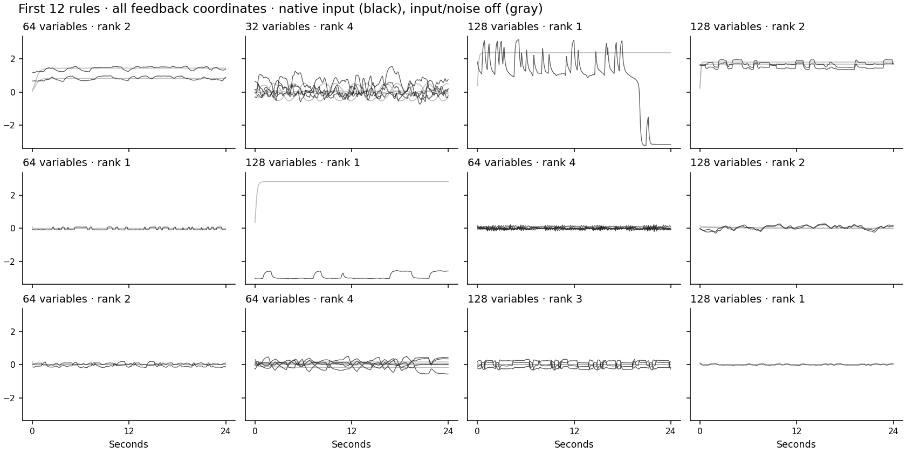

Sample the connections
V7 · Random low-rank feedback. Same equation, input and renderer.
32.000 s
Loading…
Feedback matrix A
Sampled dense matrix
V6 · engineered blocks
Outside input · shared within each pair
Network response
Directly sampled feedback
V6
Spatial amplitude driver
Observed input · voltage → STFT
Selected contact · sampled feedback in black, V6 in gray
The sampling rule
A = strength × GaussianMatrix / largest_singular_value
One recurrent rule: τ dx/dt = −x + (gJ + QAQᵀ)tanh(x) + u(t). No named blocks, prescribed eigenvalues or outcome filtering. The random background J and shared orthonormal feedback subspace Q remain. This is not the most general low-rank matrix with independent input/output subspaces.
Production: sample N from 32/64/128, rank uniformly 1–4 and strength uniformly 1.2–3.7, roughly covering V6’s operator-strength range. Other source/input ranges and the renderer remain unchanged. Connections stay fixed within a recording. These are engineering priors, not estimated physiology.
Matched comparison and packet checks
Same rank, largest singular value, Q, random background, input, initial state, innovations, source maps, carrier and recording settings. Only A changes. Global source normalization and each recording’s calibration statistics are recomputed by the unchanged renderer. The controls use V6’s rank/strengths; the separate fresh example uses the actual new production sampler.
| Example | State RMS change | Observed HGA RMS change |
|---|
Relative RMS changes use the directly sampled arm’s RMS as denominator. They are not explained variance, recoverability or evidence of improved learning. Displayed states use the first two fixed feedback coordinates divided by √N, not fitted PCA. Spatial colors share fixed ±3 limits; the driver includes existing local renderer activity.
What emerges in the first 12 sampled rules?

Black: native input, all feedback coordinates. Gray: separate input/noise-off response from a specified initial condition. No seeds replaced; no chaos claim or fitted biological model. A finite inspected trajectory does not establish a dynamical regime.
Handoff
Verified generator handoff prepared separately. Held; not sent.
Same established renderer, reader, sampler and packer. The training owner still selects the dataset at the existing MAPA input boundary. V6 is preserved. No training or automatic baseline/real/synthetic mixture is configured.
Low-rank recurrent-network lineage. This sampled ensemble is an engineering candidate, not an exact paper replication or a recovered model of speech cortex.